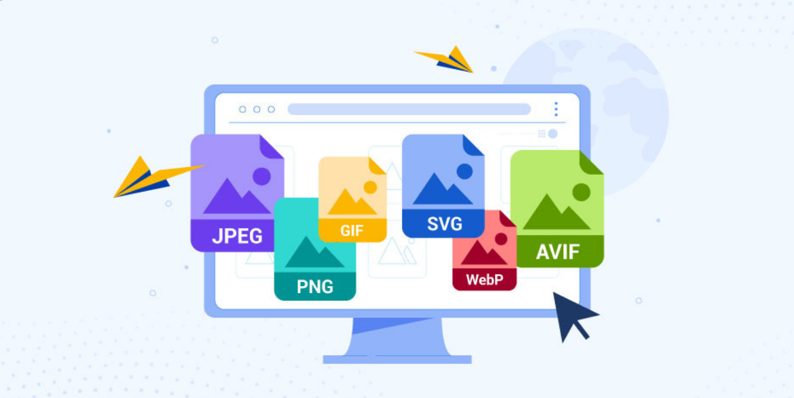

📷 Guía completa de Formatos de Imagen
En diseño gráfico y desarrollo web, elegir el formato de imagen adecuado puede marcar la diferencia en términos de calidad, rendimiento y compatibilidad. A continuación, te explicamos los formatos más utilizados y cuándo deberías usarlos.